Éléments finis pour la flexion des poutres
Notes de cours avec simulations interactives
\[ \newcommand{\d}{\mathrm{d}} \newcommand{\bm}[1]{\boldsymbol{#1}} \]
Les encadrés Simulation de cette page sont interactifs : ils s’exécutent dans votre navigateur (aucun serveur).
1 Modèle de poutre
La mécanique des milieux continus (MMC) constitue le fondement de la mécanique des solides, mais sa résolution (analytique ou numérique) est souvent trop complexe.
Des simplifications sur la géométrie et les chargements mènent à la mécanique des structures, qui s’applique aux solides dont au moins une dimension est très petite devant les autres.
Aujourd’hui : poutres d’Euler Bernoulli.
2 Problème à analyser
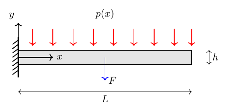
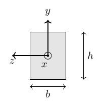
3 Découplage traction et flexion
Pour un matériau quelconque la partie traction et flexion sont couplées.
Si le matériau est isotrope on peut découpler le comportement en traction (le long de l’axe longitudinal) du comportement en flexion.
4 Modèle d’Euler–Bernoulli
Hypothèses :
- Poutre mince : \(h, b \ll L\)
- Solide prismatique : la section ne change pas le long de l’axe
- Les sections droites restent perpendiculaires à l’axe neutre pendant la déformation (Hypothèse de Kirchhoff) : \(\phi_z = \dfrac{\mathrm{d}v}{\mathrm{d}x}\)
Le champ de déplacement vaut
\[ \bm{u}(\bullet) = \begin{pmatrix} -y \sin\phi_z \\ v - y(1 - \cos\phi_z) \end{pmatrix} \overset{\text{Petits angles}}{\approx} \begin{pmatrix} -y\,\phi_z \\ v \end{pmatrix} \overset{\text{Hyp. Kir.}}{=} \begin{pmatrix} -y\,\dfrac{\mathrm{d}v}{\mathrm{d}x} \\ v \end{pmatrix} \]
où \(v(x)\) est le déplacement de l’axe moyen et \(\phi_z(x)\) est la rotation de la section.
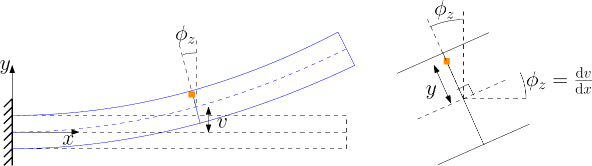
5 Déformations et contraintes
Tenseur de déformation :
\[ \bm{\varepsilon} := \frac{1}{2}\!\left(\nabla\bm{u} + (\nabla\bm{u})^\top\right),\qquad \bm{u} = \begin{pmatrix} u_x \\ u_y \end{pmatrix} = \begin{pmatrix} -y\,\dfrac{\mathrm{d}v}{\mathrm{d}x} \\ v \end{pmatrix} \]
On obtient :
\[ \begin{aligned} \varepsilon_{xx} &:= \frac{\partial u_x}{\partial x} = -y\,\frac{\mathrm{d}^2 v}{\mathrm{d}x^2}, \\ \varepsilon_{yy} &:= \frac{\partial u_y}{\partial y} = 0, \\ \varepsilon_{xy} &:= \frac{1}{2}\!\left(\frac{\partial u_y}{\partial x} + \frac{\partial u_x}{\partial y}\right) = \frac{1}{2}\!\left(\frac{\mathrm{d}v}{\mathrm{d}x} - \phi_z\right) \overset{\text{Hyp. Kir.}}{=} 0. \end{aligned} \]
Loi constitutive :
\[ \sigma_{xx} = E\,\varepsilon_{xx} = -E\,y\,\frac{\mathrm{d}^2 v}{\mathrm{d}x^2}. \]
6 Forces résultantes
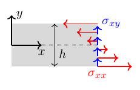
\[ T(x) = \int_S \sigma_{xy}\,\mathrm{d}S \quad \text{(Effort tranchant)}, \qquad M(x) = -\int_S y\,\sigma_{xx}\,\mathrm{d}S \quad \text{(Moment de flexion)}. \]
Le signe négatif dans \(M\) provient du fait qu’on le considère positif lorsqu’il est orienté dans le sens antihoraire (selon \(z\)).
- L’effort tranchant \(T\) n’a pas de déformations associées (\(\varepsilon_{xy}=0\)).
- Pour le moment de flexion :
\[ M = E\,\frac{\mathrm{d}^2 v}{\mathrm{d}x^2}\int_S y^2\,\mathrm{d}S = EI\,\frac{\mathrm{d}^2 v}{\mathrm{d}x^2}, \qquad I := \int_S y^2\,\mathrm{d}S. \]
Section rectangulaire : \(I = bh^3/12\).
7 Équilibre statique
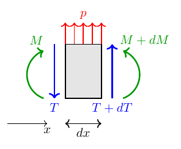
Équilibre à la translation verticale :
\[ \frac{\mathrm{d}T}{\mathrm{d}x} = -p. \]
Équilibre en rotation (termes d’ordre deux négligés) :
\[ T = -\frac{\mathrm{d}M}{\mathrm{d}x}. \]
On obtient l’équilibre :
\[ \frac{\mathrm{d}^2 M}{\mathrm{d}x^2} = EI\,\frac{\mathrm{d}^4 v}{\mathrm{d}x^4} = p. \]
8 Problème + Conditions aux bords
Pour résoudre l’équation il faut 4 conditions aux bords :
\[ EI\,\frac{\mathrm{d}^4 v}{\mathrm{d}x^4} = p. \]
Cinématiques (Dirichlet) :
\[ v = \hat{v} \text{ sur } \Gamma_v, \qquad \frac{\mathrm{d}v}{\mathrm{d}x} = \hat{\phi} \text{ sur } \Gamma_\phi. \]
Dynamiques (Neumann) :
\[ -EI\,\frac{\mathrm{d}^3 v}{\mathrm{d}x^3} = \hat{T} \text{ sur } \Gamma_T, \qquad EI\,\frac{\mathrm{d}^2 v}{\mathrm{d}x^2} = \hat{M} \text{ sur } \Gamma_M. \]
Les conditions suivantes doivent être respectées :
- \(\Gamma_v \cap \Gamma_T = \emptyset\) (on ne peut pas imposer simultanément la force et le déplacement) ;
- \(\Gamma_\phi \cap \Gamma_M = \emptyset\) (on ne peut pas choisir simultanément la rotation et le moment).
9 Exemples de conditions aux bords
Poutre encastrée–libre :
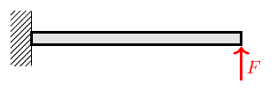
\[ v(0) = 0, \quad \frac{\mathrm{d}v}{\mathrm{d}x}(0) = 0, \quad EI\,\frac{\mathrm{d}^2 v}{\mathrm{d}x^2}(L) = 0, \quad -EI\,\frac{\mathrm{d}^3 v}{\mathrm{d}x^3}(L) = F. \]
Poutre simplement appuyée :
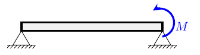
\[ v(0) = 0, \quad EI\,\frac{\mathrm{d}^2 v}{\mathrm{d}x^2}(0) = 0, \quad v(L) = 0, \quad EI\,\frac{\mathrm{d}^2 v}{\mathrm{d}x^2}(L) = M. \]
10 Espace d’approximation
Le problème homogène
\[ EI\,\frac{\mathrm{d}^4 v}{\mathrm{d}x^4} = 0 \]
a comme solution un polynôme cubique :
\[ v(x) = a_0 + a_1 x + a_2 x^2 + a_3 x^3. \]
En forme matricielle :
\[ v(x) = \begin{bmatrix} 1 & x & x^2 & x^3 \end{bmatrix} \begin{pmatrix} a_0 \\ a_1 \\ a_2 \\ a_3 \end{pmatrix}. \]
11 Élément de poutre
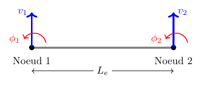
Degrés de liberté (ddl) :
- les déplacements aux nœuds \(v_1,\, v_2\) ;
- les rotations aux nœuds \(\phi_1,\, \phi_2\).
On cherche à exprimer le déplacement sous la forme :
\[ v(x) = \bm{N}(x)\,\bm{q}_e, \qquad \bm{q}_e = \begin{bmatrix} v_1 & \phi_1 & v_2 & \phi_2 \end{bmatrix}^\top. \]
12 Lien coefficients polynomiaux et ddl
Approximation :
\[ v(x) = a_0 + a_1 x + a_2 x^2 + a_3 x^3. \]
Conditions nodales :
\[ v(0) = v_1, \quad \frac{\mathrm{d}v}{\mathrm{d}x}(0) = \phi_1, \quad v(L_e) = v_2, \quad \frac{\mathrm{d}v}{\mathrm{d}x}(L_e) = \phi_2. \]
On obtient le système :
\[ \begin{bmatrix} 1 & 0 & 0 & 0 \\ 0 & 1 & 0 & 0 \\ 1 & L_e & L_e^2 & L_e^3 \\ 0 & 1 & 2L_e & 3L_e^2 \end{bmatrix} \begin{pmatrix} a_0 \\ a_1 \\ a_2 \\ a_3 \end{pmatrix} = \begin{pmatrix} v_1 \\ \phi_1 \\ v_2 \\ \phi_2 \end{pmatrix}. \]
13 Fonctions d’interpolation
En résolvant, les fonctions d’interpolation sont données par :
\[ \bm{N}(x) = \begin{bmatrix} 1 & x & x^2 & x^3 \end{bmatrix} \begin{bmatrix} 1 & 0 & 0 & 0 \\ 0 & 1 & 0 & 0 \\ -\frac{3}{L_e^2} & -\frac{2}{L_e} & \frac{3}{L_e^2} & -\frac{1}{L_e} \\ \frac{2}{L_e^3} & \frac{1}{L_e^2} & -\frac{2}{L_e^3} & \frac{1}{L_e^2} \end{bmatrix}. \]
Ce sont les splines cubiques d’Hermite (\(\xi := x/L_e\)) :
\[ \begin{aligned} N_1 &= 1 - 3\xi^2 + 2\xi^3, \\ N_2 &= L_e(\xi - 2\xi^2 + \xi^3), \end{aligned} \qquad\qquad \begin{aligned} N_3 &= 3\xi^2 - 2\xi^3, \\ N_4 &= L_e(-\xi^2 + \xi^3). \end{aligned} \]
14 Forme faible du problème
On multiplie \(EI\,\dfrac{\mathrm{d}^4 v}{\mathrm{d}x^4} = p\) par une variation arbitraire \(\delta v\) et on intègre deux fois par parties :
\[ \int_0^L EI\,\frac{\mathrm{d}^2 \delta v}{\mathrm{d}x^2}\,\frac{\mathrm{d}^2 v}{\mathrm{d}x^2}\,\mathrm{d}x = -\delta v\,EI\,\frac{\mathrm{d}^3 v}{\mathrm{d}x^3}\bigg|_0^L + \frac{\mathrm{d}\delta v}{\mathrm{d}x}\,EI\,\frac{\mathrm{d}^2 v}{\mathrm{d}x^2}\bigg|_0^L + \int_0^L \delta v\,p\,\mathrm{d}x. \]
Traitement des conditions aux bords
- Les conditions de type dynamique (Neumann) sont de type naturel : elles rentrent dans la formulation via l’intégration par parties.
- Les conditions de type cinématique (Dirichlet) sont incorporées dans l’espace d’approximation et sont donc appelées essentielles.
15 Forme faible et conditions aux bords
En considérant les conditions homogènes sur \(\Gamma_v\) et \(\Gamma_\phi\), le problème s’écrit : trouver \(v\) tel que \(v|_{\Gamma_v} = 0\), \(\dfrac{\mathrm{d}v}{\mathrm{d}x}\big|_{\Gamma_\phi} = 0\), qui satisfait
\[ \underbrace{\int_0^L EI\,\frac{\mathrm{d}^2\delta v}{\mathrm{d}x^2}\,\frac{\mathrm{d}^2 v}{\mathrm{d}x^2}\,\mathrm{d}x}_{\text{travail virtuel interne}} = \underbrace{\delta v\,\hat{T}\bigg|_{\Gamma_T} + \frac{\mathrm{d}\delta v}{\mathrm{d}x}\,\hat{M}\bigg|_{\Gamma_M} + \int_0^L \delta v\,p\,\mathrm{d}x}_{\text{travail virtuel externe}} \]
pour tout \(\delta v\) tel que \(\delta v|_{\Gamma_v} = 0\), \(\dfrac{\mathrm{d}\delta v}{\mathrm{d}x}\big|_{\Gamma_\phi} = 0\).
16 Justification énergétique
Énergie totale en flexion :
\[ E_f = \frac{1}{2}\int_V \varepsilon_{xx}\,\sigma_{xx}\,\mathrm{d}x = \frac{1}{2}\int_0^L EI\left(\frac{\mathrm{d}^2 v}{\mathrm{d}x^2}\right)^2\mathrm{d}x. \]
La variation de l’énergie est définie par :
\[ \delta E_f := \lim_{\eta\to 0}\frac{E_f(v+\eta\,\delta v)-E_f(v)}{\eta}, \qquad \eta\in\mathbb{R}. \]
On obtient :
\[ \delta E_f = \int_0^L EI\,\frac{\mathrm{d}^2\delta v}{\mathrm{d}x^2}\,\frac{\mathrm{d}^2 v}{\mathrm{d}x^2}\,\mathrm{d}x. \]
Mouvements rigides infinitésimaux
\(\delta E_f = 0\) si \(v(x) = \mathrm{const}\) ou \(v(x)=x\).
17 Principe des travaux virtuels
Le travail virtuel des forces et moments externes vaut :
\[ \delta W_f = \delta v\,\hat{T}\bigg|_{\Gamma_T} + \frac{\mathrm{d}\delta v}{\mathrm{d}x}\,\hat{M}\bigg|_{\Gamma_M} + \int_0^L \delta v\,p\,\mathrm{d}x. \]
La formulation faible représente la conservation d’énergie : \(\delta E_f = \delta W_f\).
18 Matrice de raideur élémentaire
On substitue dans la formulation faible l’approximation \(v = \bm{N}\bm{q}_e\), \(\delta v = \bm{N}\delta\bm{q}_e\).
Lien courbure – degrés de liberté :
\[ \frac{\mathrm{d}^2 v}{\mathrm{d}x^2} = \frac{\mathrm{d}^2\bm{N}}{\mathrm{d}x^2}\,\bm{q}_e = \bm{B}\,\bm{q}_e. \]
La variation d’énergie donne :
\[ \delta E_f = \delta\bm{q}_e^\top\,\bm{K}_e\,\bm{q}_e, \qquad \bm{K}_e := \int_0^{L_e} EI\,\bm{B}^\top\bm{B}\,\mathrm{d}x. \]
19 Raideur élémentaire
\[ \bm{K}_e = \frac{EI}{L_e^3} \begin{bmatrix} 12 & 6L_e & -12 & 6L_e \\ 6L_e & 4L_e^2 & -6L_e & 2L_e^2 \\ -12 & -6L_e & 12 & -6L_e \\ 6L_e & 2L_e^2 & -6L_e & 4L_e^2 \end{bmatrix}. \]
Le noyau de \(\bm{K}_e\) est donné par les translations et rotations infinitésimales :
\[ \ker\,\bm{K}_e = \left\{ \begin{pmatrix} 1 \\ 0 \\ 1 \\ 0 \end{pmatrix},\; \begin{pmatrix} 0 \\ 1 \\ L_e \\ 1 \end{pmatrix} \right\}. \]
20 Complément : ajout du comportement en traction
Le déplacement horizontal est exprimé à l’aide des fonctions chapeau :
\[ u = \begin{bmatrix} 1-\xi & \xi \end{bmatrix} \begin{pmatrix} u_1 \\ u_2 \end{pmatrix}, \qquad \xi = \frac{x}{L_e}. \]
Énergie en traction :
\[ E_t = \int_0^L EA\left(\frac{\mathrm{d}u}{\mathrm{d}x}\right)^2\mathrm{d}x. \]
La variation d’énergie donne :
\[ \delta E_t = \begin{pmatrix} \delta u_1 & \delta u_2 \end{pmatrix} \begin{bmatrix} \frac{EA}{L_e} & -\frac{EA}{L_e} \\ -\frac{EA}{L_e} & \frac{EA}{L_e} \end{bmatrix} \begin{pmatrix} u_1 \\ u_2 \end{pmatrix}. \]
21 Matrice de raideur de poutre (traction + flexion)
\[ \bm{K}_e^{\text{tract.}+\text{flex.}} = \begin{bmatrix} \frac{EA}{L_e} & 0 & 0 & -\frac{EA}{L_e} & 0 & 0 \\ 0 & \frac{12EI}{L_e^3} & \frac{6EI}{L_e^2} & 0 & -\frac{12EI}{L_e^3} & \frac{6EI}{L_e^2} \\ 0 & \frac{6EI}{L_e^2} & \frac{4EI}{L_e} & 0 & -\frac{6EI}{L_e^2} & \frac{2EI}{L_e} \\ -\frac{EA}{L_e} & 0 & 0 & \frac{EA}{L_e} & 0 & 0 \\ 0 & -\frac{12EI}{L_e^3} & -\frac{6EI}{L_e^2} & 0 & \frac{12EI}{L_e^3} & -\frac{6EI}{L_e^2} \\ 0 & \frac{6EI}{L_e^2} & \frac{2EI}{L_e} & 0 & -\frac{6EI}{L_e^2} & \frac{4EI}{L_e} \end{bmatrix}, \]
avec les degrés ordonnés \(\bm{q}_e = \begin{pmatrix} u_1 & v_1 & \phi_1 & u_2 & v_2 & \phi_2 \end{pmatrix}^\top\).
22 Chargement distribué élémentaire
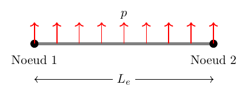
Le vecteur force associé est donné par le travail virtuel des forces externes :
\[ \delta W = \int_0^{L_e}\delta v\,p\,\mathrm{d}x = \delta\bm{q}_e^\top\int_0^{L_e}\bm{N}^\top p\,\mathrm{d}x = \delta\bm{q}_e^\top\,\bm{f}_e. \]
Si \(p\) est constant :
\[ \bm{f}_e^{\mathrm{dist.}} = p\int_0^{L_e}\bm{N}^\top\,\mathrm{d}x = \frac{pL_e}{2}\begin{pmatrix} 1 \\ \dfrac{L_e}{6} \\ 1 \\ -\dfrac{L_e}{6} \end{pmatrix}. \]
23 Forces et moments concentrés aux nœuds
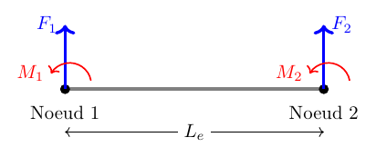
\[ \delta W = \begin{pmatrix} \delta v_1 & \delta\phi_1 & \delta v_2 & \delta\phi_2 \end{pmatrix} \begin{pmatrix} F_1 \\ M_1 \\ F_2 \\ M_2 \end{pmatrix}, \qquad \bm{f}_e^{\mathrm{nodal}} = \begin{pmatrix} F_1 \\ M_1 \\ F_2 \\ M_2 \end{pmatrix}. \]
24 Plusieurs éléments finis : assemblage
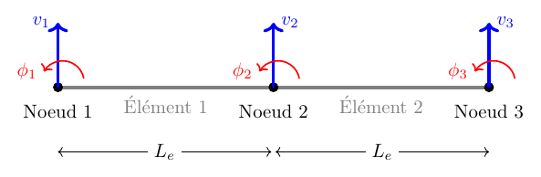
Les éléments ont les mêmes propriétés (\(E, I, S\)) et la même longueur \(L_e\), donc la même matrice élémentaire.
24.1 Degrés de liberté globaux et locaux
Avec trois nœuds, deux ddl chacun :
\[ \bm{q} = \begin{pmatrix} v_1 & \phi_1 & v_2 & \phi_2 & v_3 & \phi_3 \end{pmatrix}. \]
Ddl locaux des deux éléments :
\[ \bm{q}_{e1} = \begin{pmatrix} v_1 & \phi_1 & v_2 & \phi_2 \end{pmatrix}, \qquad \bm{q}_{e2} = \begin{pmatrix} v_2 & \phi_2 & v_3 & \phi_3 \end{pmatrix}. \]
25 Assemblage de la matrice de raideur
Initialisation : \(\bm{K} = \bm{0}_{6\times6}\).
Après ajout du premier élément \(\bm{K}_{e1}\) :
\[ \bm{K} \mathrel{+}= \frac{EI}{L_e^3} \begin{bmatrix} 12 & 6L_e & -12 & 6L_e & 0 & 0\\ 6L_e & 4L_e^2 & -6L_e & 2L_e^2 & 0 & 0\\ -12 & -6L_e & 12 & -6L_e & 0 & 0\\ 6L_e & 2L_e^2 & -6L_e & 4L_e^2 & 0 & 0\\ 0 & 0 & 0 & 0 & 0 & 0\\ 0 & 0 & 0 & 0 & 0 & 0 \end{bmatrix}. \]
Matrice globale \(\bm{K}\) (après deux éléments) :
\[ \bm{K} = \frac{EI}{L_e^3} \begin{bmatrix} 12 & 6L_e & -12 & 6L_e & 0 & 0\\ 6L_e & 4L_e^2 & -6L_e & 2L_e^2 & 0 & 0\\ -12 & -6L_e & 24 & 0 & -12 & 6L_e\\ 6L_e & 2L_e^2 & 0 & 8L_e^2 & -6L_e & 2L_e^2\\ 0 & 0 & -12 & -6L_e & 12 & -6L_e\\ 0 & 0 & 6L_e & 2L_e^2 & -6L_e & 4L_e^2 \end{bmatrix}. \]
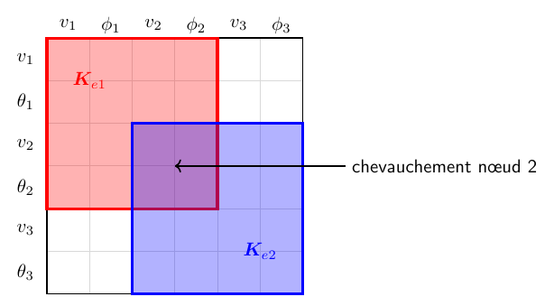
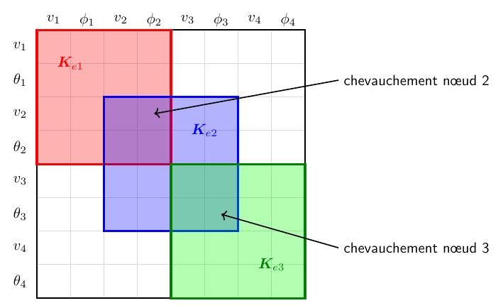
26 Assemblage de la force distribuée
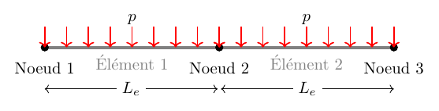
Vecteur force élémentaire :
\[ \bm{f}_e = -\frac{pL_e}{2}\begin{pmatrix} 1 & \dfrac{L_e}{6} & 1 & -\dfrac{L_e}{6} \end{pmatrix}^\top. \]
Vecteur force global \(\bm{f}\) (deux éléments) :
\[ \bm{f} = \bm{f}_{e1} + \bm{f}_{e2} = -\frac{pL_e}{2} \begin{pmatrix} 1 \\ \dfrac{L_e}{6} \\ 2 \\ 0 \\ 1 \\ -\dfrac{L_e}{6} \end{pmatrix}. \]
27 Force nodale
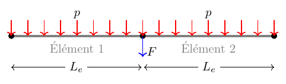
Avec une force concentrée \(F\) au nœud 2 :
\[ \bm{f} = -\begin{pmatrix} \dfrac{pL_e}{2} \\ \dfrac{pL_e^2}{12} \\ pL_e + F \\ 0 \\ \dfrac{pL_e}{2} \\ -\dfrac{pL_e^2}{12} \end{pmatrix}. \]
28 Algorithme d’assemblage
Entrée : Maillage
Sortie : Matrice de rigidité globale K, vecteur de forces global f
Initialiser K = 0, f = 0
Pour chaque élément e :
Calculer K_e et f_e (rigidité et forces distribuées élémentaires)
Récupérer la connectivité et les coordonnées nodales
Pour chaque paire de ddl locaux (m, n) dans l'élément e :
i ← local2global(m)
j ← local2global(n)
K[i,j] += K_e[m,n]
f[i] += f_e[m]
Ajouter force nodale : f = f + f_nodale
Retourner K, f29 Conditions aux bords
Sachant que \(v_1 = 0\), \(\phi_1 = 0\) (encastrement), on résout le système partitionné.
On peut distinguer les ddl bloqués \(\bm{q}_b\) et libres \(\bm{q}_l\) :
\[ \bm{q}_b = \begin{pmatrix} v_1 \\ \phi_1 \end{pmatrix}, \qquad \bm{q}_l = \begin{pmatrix} v_2 \\ \phi_2 \\ v_3 \\ \phi_3 \end{pmatrix}. \]
Système partitionné :
\[ \begin{bmatrix} \bm{K}_{bb} & \bm{K}_{bl} \\ \bm{K}_{lb} & \bm{K}_{ll} \end{bmatrix} \begin{pmatrix} \bm{q}_b \\ \bm{q}_l \end{pmatrix} = \begin{pmatrix} \bm{f}_b + \bm{r} \\ \bm{f}_l \end{pmatrix}, \]
où \(\bm{r} = \begin{pmatrix} F_1 \\ M_1 \end{pmatrix}\) sont les réactions à l’encastrement.
Si on ne bloque pas les mouvements rigides, la matrice \(\bm{K}\) ne sera pas inversible.
30 Résolution
On résout d’abord pour \(\bm{q}_l\) :
\[ \bm{q}_l = \bm{K}_{ll}^{-1}(\bm{f}_l - \bm{K}_{lb}\,\bm{q}_b) = \bm{K}_{ll}^{-1}\bm{f}_l \quad \text{(car } \bm{q}_b = 0 \text{)}. \]
Ensuite on trouve les réactions :
\[ \bm{r} = \bm{K}_{bl}\,\bm{q}_l - \bm{f}_b. \]
31 Résultats
Barre prismatique rectangulaire : \(L=1\,\mathrm{[m]}\), \(b=1\,\mathrm{[cm]}\), \(h=1\,\mathrm{[cm]}\). Paramètres acier : \(EI = 2\times10^5\,[\mathrm{Pa\cdot m^4}]\). Forces : \(p=100\,[\mathrm{N/m}]\), \(F=20\,[\mathrm{N}]\).
32 Problème dynamique
Le problème dynamique se retrouve en utilisant le principe de d’Alembert :
\[ EI\,\frac{\partial^4 v}{\partial x^4} = p + f_{\mathrm{inertie}}, \qquad f_{\mathrm{inertie}} = -\rho S\,\frac{\partial^2 v}{\partial t^2}. \]
La formulation faible est obtenue en considérant le travail des forces d’inertie :
\[ \underbrace{\int_0^L EI\,\frac{\mathrm{d}^2\delta v}{\mathrm{d}x^2}\,\frac{\mathrm{d}^2 v}{\mathrm{d}x^2}\,\mathrm{d}x}_{\delta E_f} = \underbrace{-\int_0^L \rho S\,\delta v\,\frac{\partial^2 v}{\partial t^2}\,\mathrm{d}x}_{\delta W_{\mathrm{inertie}}} + \underbrace{\delta v\,\hat{T}\bigg|_{\Gamma_T} + \frac{\mathrm{d}\delta v}{\mathrm{d}x}\,\hat{M}\bigg|_{\Gamma_M} + \int_0^L\delta v\,p\,\mathrm{d}x}_{\delta W_{\mathrm{ext}}}. \]
33 Formulation discrète
On substitue \(v = \bm{N}\bm{q}_e(t)\), \(\delta v = \bm{N}\delta\bm{q}_e\) dans la formulation faible. Les degrés de liberté \(\bm{q}_e(t)\) dépendent maintenant du temps.
\[ \delta W_{\mathrm{inertie}} = -\delta\bm{q}_e\,\bm{M}_e\,\ddot{\bm{q}}_e, \qquad \bm{M}_e = \int_0^{L_e}\rho S\,\bm{N}^\top\bm{N}\,\mathrm{d}x. \]
Matrice de masse élémentaire :
\[ \bm{M}_e = \frac{\rho S L_e}{420} \begin{bmatrix} 156 & 22L_e & 54 & -13L_e \\ 22L_e & 4L_e^2 & 13L_e & -3L_e^2 \\ 54 & 13L_e & 156 & -22L_e \\ -13L_e & -3L_e^2 & -22L_e & 4L_e^2 \end{bmatrix}. \]
L’assemblage pour la matrice de masse est le même que pour \(\bm{K}\).
34 Problème dynamique global
Système global (sans forces) :
\[ \bm{M}\,\ddot{\bm{q}} + \bm{K}\,\bm{q} = \bm{0}. \]
Après avoir éliminé les ddl bloqués (\(\bm{q}_b = 0\)) :
\[ \bm{M}_{ll}\,\ddot{\bm{q}}_l + \bm{K}_{ll}\,\bm{q}_l = \bm{0}. \]
35 Analyse modale
La décomposition modale est cruciale car les sollicitations externes ont souvent un contenu fréquentiel limité sur une bande.
On considère une solution harmonique \(\bm{q}(t) = \bm{\phi}\,e^{i\omega t}\) :
\[ (\bm{K}_{ll} - \omega^2\,\bm{M}_{ll})\,\bm{\phi} = \bm{0}. \]
Pour trouver les fréquences propres, on résout :
\[ \det(\bm{K}_{ll} - \omega_i^2\,\bm{M}_{ll}) = 0, \qquad i = 1,\dots,n. \]
Le vecteur propre \(\bm{\phi}_i\) se trouve en résolvant :
\[ (\bm{K}_{ll} - \omega_i^2\,\bm{M}_{ll})\,\bm{\phi}_i = \bm{0}. \]
On peut avoir plusieurs vecteurs propres \(\bm{\phi}_i\) pour une fréquence propre \(\omega_i\).
36 Résultat de l’analyse modale
\(L = 1\,[\mathrm{m}]\), \(EI = 2\times10^5\,[\mathrm{Pa\cdot m^4}]\), \(\rho S = 0.78\,[\mathrm{kg/m}]\).
37 Propriétés des modes
37.1 Orthogonalité des modes
Vu que \(\bm{M}\), \(\bm{K}\) sont symétriques, les modes vérifient :
\[ \bm{\phi}_i^\top\,\bm{M}\,\bm{\phi}_j = 0, \qquad \qquad \bm{\phi}_i^\top\,\bm{K}\,\bm{\phi}_j = 0 \qquad \text{si } i \neq j. \]
En normalisant de manière appropriée, \(\bm{\Phi} = \begin{bmatrix} \bm{\phi}_1 & \bm{\phi}_2 & \dots & \bm{\phi}_n \end{bmatrix}\) :
\[ \bm{\Phi}^\top\bm{M}\bm{\Phi} = \bm{I}, \qquad \bm{\Phi}^\top\bm{K}\bm{\Phi} = \bm{\Omega}^2, \qquad \bm{\Omega}^2 = \mathrm{diag}(\omega_1^2,\omega_2^2,\dots,\omega_n^2). \]
On peut exprimer le système dans la base modale \(\bm{q} = \bm{\Phi}\bm{\eta}\) :
\[ \bm{M}\bm{\Phi}\ddot{\bm{\eta}} + \bm{K}\bm{\Phi}\bm{\eta} = 0. \]
En multipliant par \(\bm{\Phi}^\top\) et en utilisant les propriétés :
\[ \ddot{\bm{\eta}} + \bm{\Omega}^2\bm{\eta} = 0. \]
Interprétation physique : les modes propres sont découplés.
38 Invariance des modes
Un mode est un espace invariant : si on prend une condition initiale donnée par une combinaison linéaire des modes
\[ \bm{q}^0 = \sum_{i\in I}\bm{\phi}_i\,\eta_i^0, \]
la solution du problème dynamique sera décrite par les mêmes modes :
\[ \bm{q}(t) = \sum_{i\in I}\bm{\phi}_i\,\eta_i(t). \]
38.1 Preuve de l’invariance
Chaque espace propre s’écrit :
\[ E_i := \{\bm{\phi}_i \neq \bm{0} \mid \bm{K}\bm{\phi}_i = \omega_i^2\,\bm{M}\bm{\phi}_i\}. \]
Invariance : si \(\bm{q}(0),\,\dot{\bm{q}}(0) \in E_i\), alors \(\bm{q}(t) \in E_i\) pour tout \(t \ge 0\).
Preuve :
- Écrire \(\bm{q}(t) = \bm{\phi}_i\,\eta_i(t) + \sum_{j\neq i}\bm{\phi}_j\,\eta_j(t)\).
- En utilisant \(\bm{K}\bm{\phi}_i = \omega_i^2\,\bm{M}\bm{\phi}_i\), on obtient les équations découplées : \[ \begin{aligned} \ddot{\eta}_i + \omega_i^2\,\eta_i &= 0, \qquad \eta_i\big|_{t=0} = \eta_i^0, \quad \dot{\eta}_i\big|_{t=0} = \dot{\eta}_i^0, \\ \ddot{\eta}_j + \omega_j^2\,\eta_j &= 0, \qquad \eta_j\big|_{t=0} = 0, \quad \dot{\eta}_j\big|_{t=0} = 0. \end{aligned} \]
- On trouve \(\eta_i(t) \neq 0\) alors que \(\eta_j(t) \equiv 0\). Le mouvement reste donc dans \(E_i\).
39 Réduction modale
Les modes peuvent être utilisés pour réduire la taille du problème
\[ \bm{M}\,\ddot{\bm{q}} + \bm{K}\,\bm{q} = \bm{f} \]
quand les sollicitations \(\bm{f}\) ont un contenu fréquentiel limité.
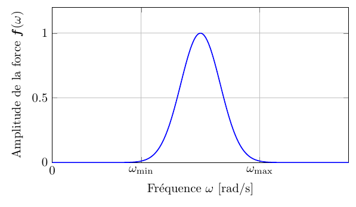
On considère \(m < n\) modes pour approximer la solution :
\[ \bm{q} \approx \bm{\Phi}_{[m]}\,\bm{\eta}_{[m]}, \qquad \bm{\Phi}_{[m]} = \begin{bmatrix} \bm{\phi}_1 & \dots & \bm{\phi}_m \end{bmatrix}, \quad \bm{\eta}_{[m]} = \begin{pmatrix} \eta_1 & \dots & \eta_m \end{pmatrix}^\top. \]
NB : on n’est pas obligé de considérer les premières \(m\) fréquences.
40 Système réduit
En utilisant l’approximation dans la dynamique et en projetant sur \(\bm{\Phi}_{[m]}\) :
\[ \bm{\Phi}_{[m]}^\top\bm{M}\bm{\Phi}_{[m]}\,\ddot{\bm{\eta}} + \bm{\Phi}_{[m]}^\top\bm{K}\bm{\Phi}_{[m]}\,\bm{\eta}_{[m]} = \bm{\Phi}_{[m]}^\top\bm{f}. \]
La matrice \(\bm{\Phi}_{[m]}\) vérifie :
\[ \bm{K}\bm{\Phi}_{[m]} = \bm{M}\bm{\Phi}_{[m]}\,\bm{\Omega}_{[m]}^2, \qquad \bm{\Omega}_{[m]}^2 = \mathrm{diag}(\omega_1^2,\omega_2^2,\dots,\omega_m^2). \]
On obtient un système découplé de taille réduite :
\[ \ddot{\bm{\eta}}_{[m]} + \bm{\Omega}_{[m]}^2\,\bm{\eta}_{[m]} = \bm{\Phi}_{[m]}^\top\bm{f}. \]